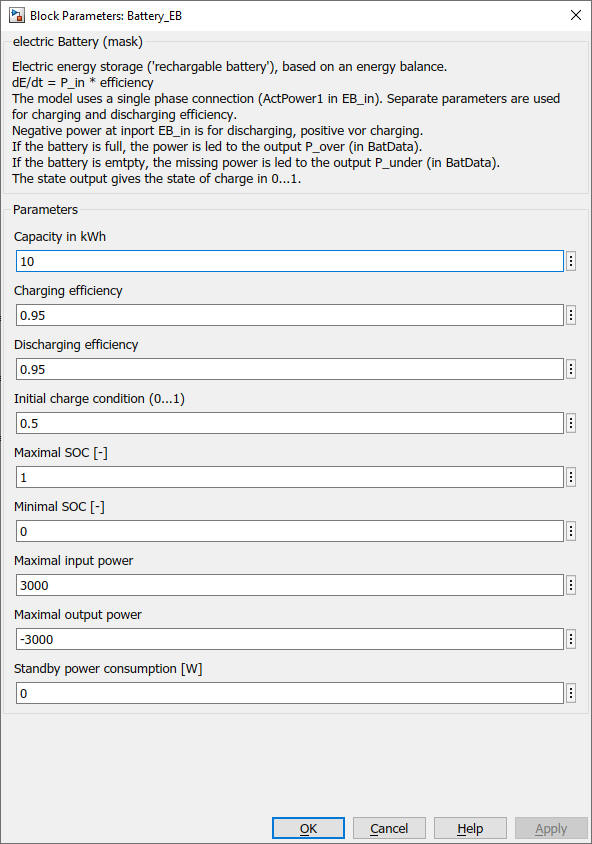

Battery_EB
Battery_EB Path: CARNOT/Storage/Electric
Battery_EB
Path: CARNOT/Storage/Electric
Purpose
Model of a battery based
on the energy balance.
Description
Electric energy storage ('rechargable battery')
with inverter,
based on an energy balance.
dE/dt = P_in * efficiency
dE/dt is the change of stored energy per timestep
P_in is the incomming electric power to the battery cell on the DC side
efficiency includes AC/DC conversion during charging (DC/AC during discharing)
and losses on the DC side
The model uses a single phase AC connection (ActPower1 in EB_in). Separate
parameters are used for charging and discharging efficiency.
Negative power at inport EB_in is for discharging, positive vor charging.
If the battery is full, the power is led to the output P_over (in BatData).
If the battery is emtpty, the missing power is led to the output P_under (in
BatData).
The state output gives the state of charge in 0...1.
Inputs: Elecric Bus EB_in
| elements in EB | physical unit |
|---|---|
| voltage line 1 | [V] |
| active power line 1 | [W] |
| voltage line 2 | [V] |
| active power line 2 | [W] |
| voltage line 3 | [V] |
| active power line 3 | [W] |
Outputs: 1 EB
Parameters

Literature
Koch, Manuel: Verification
of the battery block with electric bus connectors, FHNW, 2019
Characteristics
Direct Feedthrough Yes (EB_in to
Sample
time
Inherited
from driving block
Vectorized
No